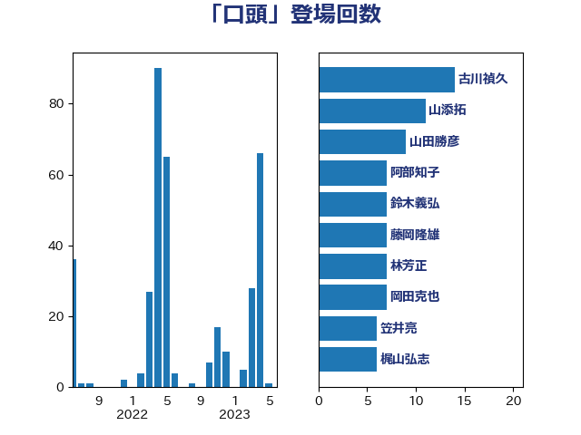

単語「口頭」

| 笠井亮 | 日本共産党 | 25 回 |
| 梶山弘志 | 自由民主党 | 21 回 |
| 古川禎久 | 自由民主党 | 14 回 |
| 山添拓 | 日本共産党 | 12 回 |
| 岡田克也 | 立憲民主党 | 7 回 |
| 林芳正 | 自由民主党 | 7 回 |
| 阿部知子 | 立憲民主党 | 7 回 |
| 階猛 | 立憲民主党 | 7 回 |
| 國重徹 | 公明党 | 6 回 |
| 稲富修二 | 立憲民主党 | 6 回 |
| 藤岡隆雄 | 立憲民主党 | 6 回 |
| 鈴木義弘 | 国民民主党 | 6 回 |
| 井上信治 | 自由民主党 | 5 回 |
| 加藤勝信 | 自由民主党 | 5 回 |
| 本村伸子 | 日本共産党 | 5 回 |
| 柚木道義 | 立憲民主党 | 5 回 |
| 梅村みずほ | 日本維新の会 | 5 回 |
| 萩生田光一 | 自由民主党 | 5 回 |
| 青山繁晴 | 自由民主党 | 5 回 |
| 井上哲士 | 日本共産党 | 4 回 |
| 古屋範子 | 公明党 | 4 回 |
| 大西健介 | 立憲民主党 | 4 回 |
| 斉藤鉄夫 | 公明党 | 4 回 |
| 福山哲郎 | 立憲民主党 | 4 回 |
| 安江伸夫 | 公明党 | 3 回 |
| 神谷裕 | 立憲民主党 | 3 回 |
| 福島みずほ | 社会民主党 | 3 回 |
| 鈴木俊一 | 自由民主党 | 3 回 |
| 城井崇 | 立憲民主党 | 2 回 |
| 大串博志 | 立憲民主党 | 2 回 |
| 大口善徳 | 公明党 | 2 回 |
| 奥野総一郎 | 立憲民主党 | 2 回 |
| 日下正喜 | 公明党 | 2 回 |
| 枝野幸男 | 立憲民主党 | 2 回 |
| 津島淳 | 自由民主党 | 2 回 |
| 漆間譲司 | 日本維新の会 | 2 回 |
| 礒崎哲史 | 国民民主党 | 2 回 |
| 舟山康江 | 国民民主党 | 2 回 |
| 西村康稔 | 自由民主党 | 2 回 |
| 門山宏哲 | 自由民主党 | 2 回 |
| 麻生太郎 | 自由民主党 | 2 回 |
| 三宅伸吾 | 自由民主党 | 1 回 |
| 上田清司 | 国民民主党 | 1 回 |
| 中野洋昌 | 公明党 | 1 回 |
| 串田誠一 | 日本維新の会 | 1 回 |
| 井野俊郎 | 自由民主党 | 1 回 |
| 伊波洋一 | 無所属 | 1 回 |
| 伊藤岳 | 日本共産党 | 1 回 |
| 佐藤英道 | 公明党 | 1 回 |
| 前川清成 | 日本維新の会 | 1 回 |
| 古川康 | 自由民主党 | 1 回 |
| 古賀之士 | 立憲民主党 | 1 回 |
| 吉川元 | 立憲民主党 | 1 回 |
| 吉川沙織 | 立憲民主党 | 1 回 |
| 塩川鉄也 | 日本共産党 | 1 回 |
| 山下雄平 | 自由民主党 | 1 回 |
| 岩渕友 | 日本共産党 | 1 回 |
| 岸信夫 | 自由民主党 | 1 回 |
| 川合孝典 | 国民民主党 | 1 回 |
| 後藤祐一 | 立憲民主党 | 1 回 |
| 斎藤アレックス | 国民民主党 | 1 回 |
| 斎藤嘉隆 | 立憲民主党 | 1 回 |
| 末松義規 | 立憲民主党 | 1 回 |
| 杉尾秀哉 | 立憲民主党 | 1 回 |
| 杉本和巳 | 日本維新の会 | 1 回 |
| 柳ヶ瀬裕文 | 日本維新の会 | 1 回 |
| 梅村聡 | 日本維新の会 | 1 回 |
| 森本真治 | 立憲民主党 | 1 回 |
| 武田良太 | 自由民主党 | 1 回 |
| 水岡俊一 | 立憲民主党 | 1 回 |
| 浜地雅一 | 公明党 | 1 回 |
| 浜田聡 | NHK党 | 1 回 |
| 浦野靖人 | 日本維新の会 | 1 回 |
| 渡辺周 | 立憲民主党 | 1 回 |
| 牧島かれん | 自由民主党 | 1 回 |
| 盛山正仁 | 自由民主党 | 1 回 |
| 矢倉克夫 | 公明党 | 1 回 |
| 石垣のりこ | 立憲民主党 | 1 回 |
| 石橋林太郎 | 自由民主党 | 1 回 |
| 芳賀道也 | 国民民主党 | 1 回 |
| 豊田俊郎 | 自由民主党 | 1 回 |
| 道下大樹 | 立憲民主党 | 1 回 |
| 鈴木庸介 | 立憲民主党 | 1 回 |
| 鈴木貴子 | 自由民主党 | 1 回 |
| 鈴木馨祐 | 自由民主党 | 1 回 |
| 長妻昭 | 立憲民主党 | 1 回 |
| 青柳仁士 | 日本維新の会 | 1 回 |
| 高橋千鶴子 | 日本共産党 | 1 回 |